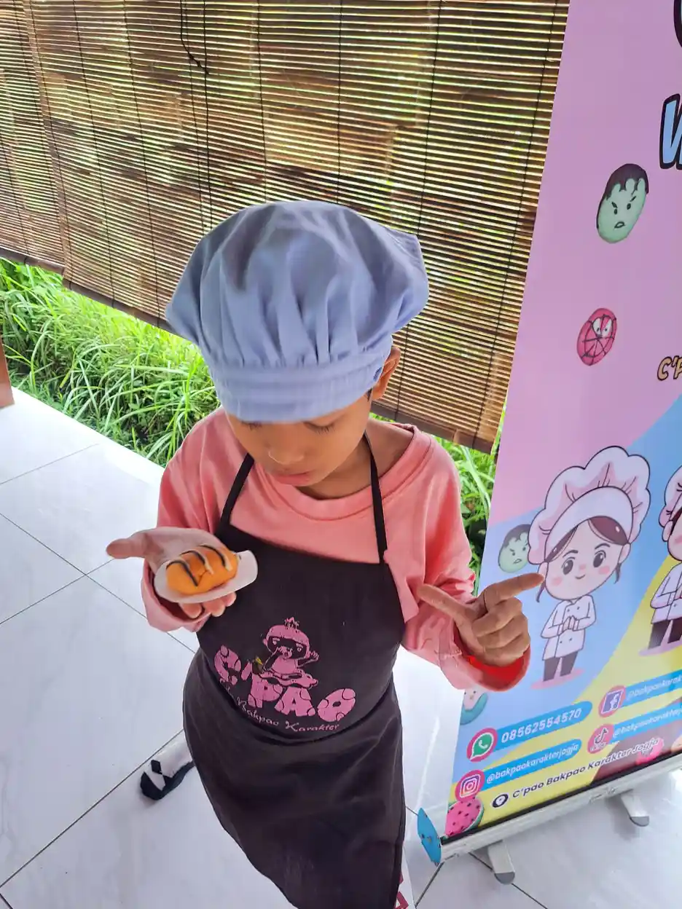
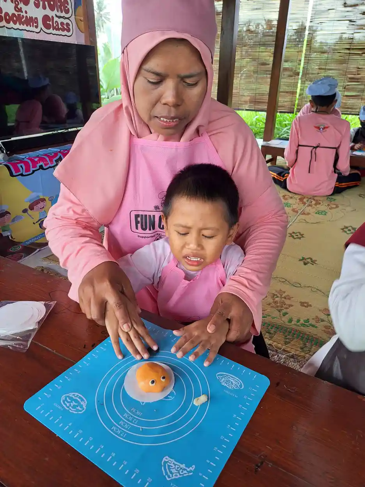

Terapi okupasi adalah salah satu bentuk terapi rehabilitasi yang dirancang untuk membantu seseorang, termasuk anak berkebutuhan khusus, agar mampu menjalankan aktivitas sehari-hari secara mandiri. Istilah "okupasi" sendiri berasal dari kata occupation dalam bahasa Inggris, yang merujuk pada seluruh aktivitas bermakna yang dilakukan seseorang dalam kehidupan sehari-hari, mulai dari makan, berpakaian, bermain, belajar, hingga berinteraksi dengan orang lain.
Di Indonesia, kebutuhan akan terapi okupasi anak terus meningkat seiring dengan meningkatnya kesadaran masyarakat terhadap kondisi anak berkebutuhan khusus (ABK). Menurut data Kementerian Kesehatan RI, sekitar 7-10% anak di Indonesia mengalami gangguan tumbuh kembang yang memerlukan intervensi terapeutik. Sayangnya, banyak orang tua yang belum memahami apa itu terapi okupasi, bagaimana prosesnya, dan seberapa besar manfaatnya bagi perkembangan anak mereka.
Di Yayasan Ukhuwah Kaffah Amanatullah (YUKA), kami telah mendampingi banyak anak berkebutuhan khusus melalui Sekolah Inklusi Taruna Imani di Sleman, Yogyakarta. Pengalaman kami menunjukkan bahwa terapi okupasi, jika dilakukan secara konsisten dan dengan pendekatan yang tepat, mampu memberikan perubahan yang sangat berarti dalam kehidupan anak-anak ini. Untuk memahami lebih dalam tentang siapa saja yang termasuk anak berkebutuhan khusus (ABK), Anda bisa membaca panduan lengkap kami.
Daftar Isi
Apa Itu Terapi Okupasi?
Terapi okupasi adalah intervensi kesehatan yang dilakukan oleh tenaga profesional bernama terapis okupasi (occupational therapist). Terapi ini bertujuan membantu individu, khususnya anak-anak, untuk mencapai kemandirian dalam menjalankan aktivitas keseharian yang bermakna bagi mereka. Berbeda dengan fisioterapi yang lebih berfokus pada pemulihan fungsi gerak tubuh secara umum, terapi okupasi menitikberatkan pada kemampuan fungsional yang dibutuhkan untuk menjalani kehidupan sehari-hari.
Menurut World Federation of Occupational Therapists (WFOT), terapi okupasi didefinisikan sebagai profesi kesehatan yang berpusat pada klien dan bertujuan mempromosikan kesehatan serta kesejahteraan melalui okupasi atau aktivitas bermakna. Tujuan utamanya adalah memampukan individu untuk berpartisipasi dalam aktivitas kehidupan sehari-hari. Terapis okupasi mencapai tujuan ini dengan bekerja sama bersama individu dan komunitas untuk meningkatkan kemampuan mereka dalam melakukan aktivitas yang mereka inginkan, butuhkan, atau diharapkan untuk dilakukan.
Dalam konteks terapi okupasi anak, fokusnya meliputi beberapa area penting, yaitu:
- Keterampilan motorik halus seperti menggenggam, menulis, menggunting, mengancingkan baju, dan menggunakan peralatan makan
- Keterampilan motorik kasar seperti keseimbangan tubuh, koordinasi gerakan, dan postur tubuh saat duduk
- Pemrosesan sensorik yang mencakup kemampuan anak dalam menerima, mengolah, dan merespons stimulus dari lingkungan
- Keterampilan kognitif meliputi konsentrasi, pemecahan masalah, perencanaan, dan pengorganisasian tugas
- Keterampilan sosial dan emosional seperti regulasi emosi, bermain bersama teman, dan berkomunikasi
- Kemandirian diri (self-care) termasuk makan sendiri, mandi, berpakaian, dan kebersihan diri
Seorang terapis okupasi anak biasanya memiliki latar belakang pendidikan di bidang okupasi terapi (S1 atau D4) dan telah menyelesaikan program profesi. Mereka terdaftar di Ikatan Okupasi Terapis Indonesia (IOTI) dan memiliki Surat Tanda Registrasi (STR) dari Kementerian Kesehatan. Hal ini penting untuk memastikan bahwa anak Anda mendapatkan penanganan dari tenaga profesional yang kompeten dan berkualitas.
Manfaat Terapi Okupasi untuk Anak Berkebutuhan Khusus
Manfaat terapi okupasi sangat luas dan mencakup berbagai aspek perkembangan anak. Penelitian yang diterbitkan di American Journal of Occupational Therapy menunjukkan bahwa 80% anak yang menjalani terapi okupasi secara rutin selama minimal 6 bulan menunjukkan peningkatan signifikan dalam kemandirian sehari-hari. Berikut adalah manfaat terapi okupasi yang perlu orang tua ketahui:
1. Meningkatkan Kemampuan Motorik Halus
Motorik halus adalah kemampuan yang melibatkan gerakan otot-otot kecil di tangan dan jari. Banyak anak berkebutuhan khusus mengalami kesulitan dalam hal ini, sehingga mereka sulit menulis, menggunting, atau bahkan memegang sendok. Melalui terapi okupasi, anak dilatih secara bertahap dengan aktivitas yang menyenangkan seperti bermain plastisin, meronce manik-manik, atau menyusun balok. Sebuah studi di Journal of Hand Therapy menemukan bahwa latihan motorik halus terstruktur dapat meningkatkan kekuatan genggaman anak hingga 40% dalam 12 minggu.
2. Mengembangkan Kemandirian dalam Aktivitas Sehari-hari
Salah satu tujuan utama terapi okupasi adalah membantu anak menjadi lebih mandiri. Anak diajarkan cara makan sendiri, memakai baju, mengikat tali sepatu, menyikat gigi, dan berbagai aktivitas perawatan diri lainnya. Terapis menggunakan teknik yang disesuaikan dengan kemampuan anak, termasuk penggunaan alat bantu adaptif jika diperlukan. Data dari National Board for Certification in Occupational Therapy menunjukkan bahwa 72% anak yang menjalani terapi okupasi rutin mengalami peningkatan kemandirian dalam perawatan diri selama tahun pertama terapi.

3. Memperbaiki Regulasi Sensorik
Banyak anak berkebutuhan khusus memiliki gangguan sensorik, yaitu kesulitan dalam memproses informasi yang diterima dari panca indra. Beberapa anak mungkin terlalu sensitif terhadap sentuhan, suara, atau tekstur tertentu (hipersensitivitas), sementara yang lain justru kurang responsif terhadap rangsangan sensorik (hiposensitivitas). Terapi okupasi dengan pendekatan terapi sensori integrasi membantu anak belajar mengelola dan merespons stimulus sensorik dengan lebih baik.
4. Meningkatkan Konsentrasi dan Fokus
Anak-anak dengan gangguan seperti ADHD (Attention Deficit Hyperactivity Disorder) sering kali kesulitan untuk duduk tenang dan fokus pada satu tugas. Terapi okupasi memberikan strategi dan teknik yang membantu anak meningkatkan rentang perhatian mereka. Misalnya, penggunaan alat bantu sensorik seperti fidget tools, jadwal visual, dan teknik self-regulation. Studi yang diterbitkan di Journal of Attention Disorders mencatat bahwa program terapi okupasi berbasis sensorik dapat meningkatkan durasi fokus anak ADHD hingga 35% setelah 4 bulan intervensi.
5. Mendukung Perkembangan Sosial dan Emosional
Terapi okupasi juga membantu anak mengembangkan keterampilan sosial seperti bergantian, berbagi, bekerja sama, dan memahami isyarat sosial. Anak-anak dengan autisme sering kali mengalami kesulitan dalam berinteraksi sosial, dan terapi okupasi menyediakan lingkungan yang aman untuk melatih keterampilan ini. Melalui permainan kelompok, aktivitas berpasangan, dan simulasi situasi sosial, anak belajar membangun hubungan yang positif dengan orang lain.
6. Meningkatkan Kemampuan Akademik
Kemampuan motorik halus, konsentrasi, dan pemrosesan sensorik yang baik merupakan fondasi penting untuk keberhasilan akademik anak. Ketika anak sudah mampu memegang pensil dengan benar, duduk dengan postur yang baik, dan fokus pada instruksi guru, proses belajar di sekolah akan menjadi jauh lebih efektif. Terapi okupasi sering kali berkolaborasi dengan guru dan orang tua dalam menciptakan lingkungan belajar yang mendukung kebutuhan khusus anak.
7. Membangun Kepercayaan Diri Anak
Setiap pencapaian kecil dalam terapi okupasi, mulai dari berhasil mengancingkan baju sendiri hingga menulis nama sendiri, memberikan dampak besar bagi kepercayaan diri anak. Anak yang sebelumnya merasa frustrasi karena tidak bisa melakukan hal-hal yang dilakukan teman sebayanya, perlahan mulai merasa mampu dan berharga. Rasa percaya diri ini menjadi modal penting untuk perkembangan anak di masa depan.
Siapa yang Membutuhkan Terapi Okupasi?
Terapi okupasi bukan hanya untuk satu jenis kondisi tertentu. Berbagai kelompok anak dengan kebutuhan khusus dapat memperoleh manfaat dari intervensi ini. Berikut adalah beberapa kondisi yang umumnya memerlukan terapi okupasi:
Anak dengan Gangguan Spektrum Autisme (GSA)
Anak-anak dengan autisme sering mengalami kesulitan dalam pemrosesan sensorik, keterampilan motorik, interaksi sosial, dan perilaku repetitif. Terapi okupasi membantu mereka mengelola sensitivitas sensorik, mengembangkan kemampuan bermain, dan meningkatkan kemandirian. Menurut data CDC, sekitar 1 dari 36 anak teridentifikasi memiliki autisme, dan terapi okupasi menjadi salah satu intervensi yang paling sering direkomendasikan.
Anak dengan ADHD
Anak dengan ADHD mendapat manfaat besar dari terapi okupasi, terutama dalam hal pengembangan strategi regulasi diri, peningkatan fokus dan konsentrasi, serta pengelolaan perilaku impulsif. Terapis okupasi mengajarkan teknik-teknik praktis yang bisa diterapkan anak di rumah maupun di sekolah.
Anak dengan Down Syndrome
Anak-anak dengan Down syndrome umumnya mengalami keterlambatan perkembangan motorik dan kognitif. Tonus otot yang rendah (hipotonia) membuat mereka membutuhkan latihan khusus untuk memperkuat otot-otot tangan dan meningkatkan koordinasi. Terapi okupasi membantu mereka mencapai milestone perkembangan yang mungkin membutuhkan waktu lebih lama dibandingkan anak pada umumnya.
Anak dengan Disabilitas Intelektual (Tunagrahita)
Anak-anak dengan disabilitas intelektual (sebelumnya dikenal sebagai tunagrahita) memerlukan pendekatan terapi yang disesuaikan dengan tingkat kemampuan kognitif mereka. Sesuai UU No. 8 Tahun 2016 tentang Penyandang Disabilitas, istilah resmi yang digunakan adalah disabilitas intelektual. Terapi okupasi membantu mereka mempelajari keterampilan hidup dasar (life skills) yang esensial untuk kemandirian, seperti kebersihan diri, makan, dan keterampilan domestik sederhana.
Anak dengan Cerebral Palsy
Cerebral palsy memengaruhi gerakan dan postur tubuh anak akibat kerusakan otak yang terjadi sebelum, selama, atau segera setelah kelahiran. Terapi okupasi berfokus pada pengembangan kemampuan fungsional anak meskipun ada keterbatasan fisik, termasuk penggunaan alat bantu adaptif untuk mendukung kemandirian.
Anak dengan Keterlambatan Perkembangan (Developmental Delay)
Tidak semua anak yang membutuhkan terapi okupasi memiliki diagnosis spesifik. Beberapa anak mungkin mengalami keterlambatan perkembangan umum yang memengaruhi kemampuan motorik, bahasa, atau sosial mereka. Terapi okupasi memberikan stimulasi yang dibutuhkan agar anak dapat mengejar ketertinggalan perkembangan.

Kapan Harus Membawa Anak ke Terapis Okupasi?
Perhatikan tanda-tanda berikut pada anak Anda: kesulitan memegang pensil atau sendok, tidak suka disentuh atau justru terus-menerus menyentuh benda, sering menabrak benda saat berjalan, kesulitan mengikuti instruksi bertahap, menghindari aktivitas yang melibatkan tangan, atau memiliki kesulitan dalam perawatan diri yang tidak sesuai dengan usianya. Jika Anda menemukan beberapa tanda ini, konsultasikan dengan dokter anak atau langsung ke terapis okupasi untuk evaluasi lebih lanjut.
Proses dan Teknik Terapi Okupasi
Proses terapi okupasi anak bukan sekadar sesi latihan biasa. Setiap program dirancang secara individual berdasarkan kebutuhan, kemampuan, dan tujuan spesifik masing-masing anak. Berikut adalah tahapan umum dalam proses terapi okupasi:
Tahap 1: Asesmen dan Evaluasi Awal
Proses terapi dimulai dengan evaluasi menyeluruh terhadap kondisi anak. Terapis okupasi akan melakukan observasi, wawancara dengan orang tua, dan menggunakan alat ukur standar untuk menilai kemampuan motorik halus dan kasar, pemrosesan sensorik, kemampuan kognitif, keterampilan perawatan diri, serta kemampuan sosial-emosional. Asesmen ini biasanya membutuhkan 1-2 sesi dan hasilnya menjadi dasar penyusunan program terapi individual.
Tahap 2: Penyusunan Rencana Terapi (Treatment Plan)
Berdasarkan hasil asesmen, terapis okupasi menyusun rencana terapi yang mencakup tujuan jangka pendek dan jangka panjang. Rencana ini disusun bersama orang tua agar sejalan dengan kebutuhan dan harapan keluarga. Misalnya, tujuan jangka pendek mungkin "anak mampu memegang sendok dengan genggaman yang benar dalam 4 minggu", sementara tujuan jangka panjangnya bisa "anak mampu makan secara mandiri dalam 6 bulan".
Tahap 3: Pelaksanaan Terapi
Sesi terapi okupasi biasanya berlangsung selama 30-60 menit per pertemuan, dengan frekuensi 1-3 kali per minggu tergantung kebutuhan anak. Berbagai teknik yang digunakan dalam sesi terapi antara lain:
- Aktivitas bermain terstruktur (play-based therapy): Menggunakan permainan sebagai media terapi. Anak belajar sambil bermain, sehingga mereka merasa senang dan termotivasi. Contohnya bermain pasir kinetik untuk melatih kekuatan genggaman, atau bermain masak-masakan untuk melatih urutan langkah kerja.
- Latihan motorik halus: Aktivitas seperti meronce, menggunting, menempel, mewarnai, menulis di berbagai media, bermain play dough, dan memasukkan benda kecil ke dalam wadah.
- Terapi sensori integrasi: Menggunakan peralatan khusus seperti ayunan terapi, bola terapi, trampoline, tactile boards, dan sensory bins untuk membantu anak memproses informasi sensorik dengan lebih baik.
- Latihan kemandirian (ADL training): Anak berlatih langsung melakukan aktivitas sehari-hari (Activities of Daily Living) seperti mengancingkan baju, mengikat sepatu, menyikat gigi, dan merapikan tempat tidur.
- Aktivitas fungsional: Termasuk kegiatan memasak sederhana, berkebun, dan seni kreatif yang secara alami melatih berbagai keterampilan sekaligus. Di YUKA, kami menerapkan terapi memasak sebagai salah satu metode yang terbukti efektif dan disukai anak-anak.
- Penggunaan alat bantu adaptif: Untuk anak dengan keterbatasan fisik, terapis mungkin merekomendasikan penggunaan alat bantu seperti sendok bergenggaman khusus, pensil segitiga, atau kursi ergonomis.
Tahap 4: Evaluasi Berkala dan Penyesuaian Program
Setiap 3-6 bulan, terapis akan melakukan evaluasi ulang untuk melihat perkembangan anak dan menyesuaikan program terapi jika diperlukan. Tujuan terapi yang sudah tercapai akan diganti dengan tujuan baru yang lebih menantang, sesuai dengan prinsip pembelajaran bertahap (scaffolding). Orang tua juga diberikan panduan untuk melanjutkan latihan di rumah agar perkembangan anak lebih optimal.
Tahap 5: Home Program (Program Rumah)
Keberhasilan terapi okupasi tidak hanya bergantung pada sesi terapi di klinik. Terapis akan memberikan program latihan rumah (home program) yang berisi aktivitas-aktivitas sederhana yang bisa dilakukan orang tua bersama anak di rumah setiap hari. Konsistensi latihan di rumah sangat berpengaruh terhadap kecepatan kemajuan anak. Penelitian menunjukkan bahwa anak yang mendapatkan latihan di rumah secara konsisten mengalami kemajuan 50% lebih cepat dibandingkan anak yang hanya mengandalkan sesi terapi di klinik.
Gangguan Sensorik dan Sensori Integrasi
Gangguan sensorik merupakan salah satu masalah yang paling sering ditangani dalam terapi okupasi anak. Untuk memahami gangguan ini, penting untuk mengetahui bahwa manusia memiliki lebih dari lima indra. Selain penglihatan, pendengaran, penciuman, pengecapan, dan peraba, kita juga memiliki sistem vestibular (keseimbangan), proprioseptif (kesadaran posisi tubuh), dan interoseptif (sensasi internal tubuh seperti lapar dan kenyang).
Terapi sensori integrasi adalah pendekatan yang dikembangkan oleh Dr. A. Jean Ayres pada tahun 1970-an. Pendekatan ini didasarkan pada teori bahwa otak perlu mampu mengorganisasikan dan menginterpretasikan informasi dari semua sistem sensorik agar seseorang dapat berfungsi dengan baik dalam kehidupan sehari-hari. Ketika proses integrasi sensorik ini terganggu, anak mungkin menunjukkan berbagai perilaku yang tampak tidak biasa.
Jenis-jenis Gangguan Sensorik pada Anak
Gangguan sensorik pada anak dapat dibagi menjadi beberapa kategori:
- Hipersensitivitas (over-responsive): Anak bereaksi berlebihan terhadap stimulus sensorik. Contohnya, anak menangis saat mendengar suara blender, menolak memakai baju dengan label yang "gatal", tidak mau menyentuh tekstur tertentu seperti pasir atau cat, atau merasa kesakitan saat dipeluk. Sekitar 5-16% anak di populasi umum mengalami hipersensitivitas sensorik.
- Hiposensitivitas (under-responsive): Anak kurang responsif terhadap stimulus sensorik. Mereka mungkin tidak merasakan sakit saat terjatuh, tidak menyadari ada makanan di wajahnya, atau tampak tidak merespons saat dipanggil namanya. Anak-anak ini sering mencari input sensorik tambahan seperti berputar-putar, melompat-lompat, atau menggigit benda.
- Sensory seeking (pencari sensorik): Anak secara aktif mencari stimulus sensorik yang intens. Mereka mungkin suka menabrakkan diri, bermain sangat kasar, memasukkan benda ke mulut, atau mengendus benda-benda di sekitarnya.
- Gangguan diskriminasi sensorik: Anak kesulitan membedakan stimulus sensorik yang berbeda, misalnya sulit membedakan huruf 'b' dan 'd' secara visual, atau kesulitan merasakan benda yang dipegang tanpa melihatnya.
Teknik Terapi Sensori Integrasi
Dalam sesi terapi sensori integrasi, terapis okupasi menggunakan berbagai peralatan dan aktivitas khusus untuk memberikan pengalaman sensorik yang terkontrol. Beberapa teknik yang umum digunakan meliputi:
- Aktivitas vestibular: Ayunan terapi, trampoline, papan keseimbangan, dan berguling di matras untuk melatih sistem keseimbangan
- Aktivitas proprioseptif: Membawa beban ringan, mendorong dan menarik benda, merangkak melalui terowongan, dan deep pressure therapy (tekanan dalam) untuk meningkatkan kesadaran tubuh
- Aktivitas taktil: Bermain dengan berbagai tekstur seperti pasir, air, biji-bijian, slime, dan cat jari untuk melatih toleransi sentuhan
- Aktivitas visual: Permainan tracking mata, puzzle, dan aktivitas koordinasi mata-tangan
- Aktivitas auditori: Mendengarkan musik terapeutik, permainan identifikasi suara, dan latihan mengikuti instruksi verbal
- Diet sensorik (sensory diet): Program aktivitas sensorik yang dirancang khusus untuk dilakukan sepanjang hari, bukan hanya saat sesi terapi, untuk membantu anak tetap dalam kondisi regulasi yang optimal
Penelitian terbaru yang dipublikasikan di Journal of Autism and Developmental Disorders menunjukkan bahwa terapi sensori integrasi yang dilakukan oleh terapis okupasi terlatih secara signifikan meningkatkan partisipasi anak autisme dalam aktivitas sehari-hari dan mengurangi perilaku sensorik yang mengganggu. Studi ini melibatkan 328 anak dan menemukan peningkatan sebesar 42% dalam kemampuan regulasi sensorik setelah 6 bulan terapi rutin.
"Setiap anak memiliki cara unik dalam memproses dunia di sekitarnya. Tugas kita sebagai terapis dan pendamping adalah memahami cara unik tersebut dan membantu mereka menemukan keseimbangan, bukan memaksa mereka menjadi 'normal'."
Biaya dan Durasi Terapi Okupasi
Salah satu pertanyaan yang paling sering diajukan orang tua adalah mengenai biaya dan berapa lama terapi okupasi harus dilakukan. Berikut informasi yang perlu Anda ketahui:
Estimasi Biaya Terapi Okupasi di Indonesia
Biaya terapi okupasi bervariasi tergantung pada beberapa faktor, seperti lokasi klinik atau rumah sakit, kualifikasi terapis, durasi sesi, serta fasilitas yang tersedia. Berikut adalah kisaran biaya per sesi di Indonesia:
- Rumah sakit pemerintah: Rp100.000 - Rp250.000 per sesi
- Rumah sakit swasta: Rp250.000 - Rp500.000 per sesi
- Klinik tumbuh kembang anak: Rp150.000 - Rp400.000 per sesi
- Terapis okupasi home visit: Rp300.000 - Rp600.000 per kunjungan
- Yayasan dan lembaga sosial: Rp50.000 - Rp200.000 per sesi (seringkali disubsidi)
BPJS dan Terapi Okupasi
Kabar baiknya, terapi okupasi di Indonesia dapat ditanggung oleh BPJS Kesehatan. Syaratnya, Anda memerlukan surat rujukan dari dokter spesialis anak atau dokter spesialis rehabilitasi medik di fasilitas kesehatan tingkat pertama (FKTP). Dengan rujukan tersebut, anak bisa mendapatkan terapi okupasi di rumah sakit yang bekerja sama dengan BPJS tanpa biaya tambahan atau dengan biaya minimal. Pastikan untuk mengurus rujukan terlebih dahulu sebelum memulai terapi.
Durasi dan Frekuensi Terapi yang Direkomendasikan
Tidak ada durasi terapi yang "satu ukuran untuk semua". Setiap anak memiliki kebutuhan yang berbeda. Namun, secara umum, berikut adalah rekomendasi berdasarkan praktik klinis:
- Frekuensi: 1-3 sesi per minggu, tergantung kebutuhan anak. Anak dengan kebutuhan lebih kompleks mungkin memerlukan frekuensi yang lebih tinggi di awal terapi.
- Durasi per sesi: 30-60 menit. Untuk anak yang sangat kecil atau memiliki rentang perhatian pendek, sesi 30 menit lebih efektif. Anak yang lebih besar bisa menjalani sesi 45-60 menit.
- Total durasi program: Minimal 3-6 bulan untuk melihat hasil awal. Banyak anak memerlukan terapi selama 1-2 tahun atau lebih untuk mencapai kemandirian yang optimal.
- Evaluasi: Setiap 3-6 bulan sekali dilakukan evaluasi ulang untuk menentukan apakah terapi perlu dilanjutkan, dimodifikasi, atau dapat dihentikan.
Penting untuk diingat bahwa terapi okupasi bukanlah proses instan. Diperlukan kesabaran, konsistensi, dan kerja sama yang erat antara terapis, orang tua, dan guru agar anak dapat mencapai potensi terbaiknya. Setiap anak memiliki kecepatan perkembangan yang unik, dan membandingkan kemajuan anak Anda dengan anak lain tidaklah adil bagi si anak maupun bagi Anda sebagai orang tua.

Pengalaman YUKA dalam Pendampingan Terapi
Di Yayasan Ukhuwah Kaffah Amanatullah (YUKA), kami memiliki pengalaman bertahun-tahun dalam mendampingi anak-anak berkebutuhan khusus melalui Sekolah Inklusi Taruna Imani yang berlokasi di Sleman, Yogyakarta. Meskipun kami bukan klinik terapi, pendekatan kami dalam pendidikan dan pendampingan sangat terinspirasi oleh prinsip-prinsip terapi okupasi.
Pendekatan Holistik YUKA
Kami percaya bahwa setiap anak adalah individu unik yang diciptakan dengan potensi dan kelebihan masing-masing. Pendekatan kami dalam mendampingi anak berkebutuhan khusus tidak hanya berfokus pada aspek akademik, tetapi juga pada pengembangan keterampilan hidup, kemandirian, dan kesiapan sosial. Beberapa program yang kami jalankan dan memiliki keselarasan dengan prinsip terapi okupasi antara lain:
- Program memasak (cooking class): Anak-anak belajar memasak bersama, yang secara alami melatih motorik halus, kemampuan mengikuti instruksi, kerja sama, dan kemandirian. Baca lebih lanjut tentang manfaat terapi memasak untuk anak berkebutuhan khusus.
- Kegiatan seni dan kerajinan: Melukis, menggunting, menempel, dan membuat kerajinan tangan melatih koordinasi mata-tangan dan kreativitas anak.
- Aktivitas bermain terstruktur: Bermain dengan teman-teman di lingkungan yang aman dan terbimbing membantu anak mengembangkan keterampilan sosial.
- Latihan kemandirian harian: Anak-anak dibiasakan untuk merapikan peralatan mereka sendiri, makan secara mandiri, dan menjaga kebersihan diri.
Kisah Inspiratif: Perjalanan Andi Menuju Kemandirian
Andi (bukan nama sebenarnya) datang ke YUKA pada usia 6 tahun dengan diagnosis autisme dan keterlambatan perkembangan motorik. Saat pertama kali bergabung, Andi belum bisa memegang sendok dengan benar, menghindari kontak mata, dan sering menunjukkan perilaku tantrum ketika dihadapkan dengan tekstur makanan yang tidak familiar.
Melalui pendampingan yang konsisten selama dua tahun, termasuk mengikuti program memasak dan berbagai aktivitas terstruktur di YUKA, perkembangan Andi sangat luar biasa. Kini ia mampu makan secara mandiri, dapat mengikuti instruksi sederhana, mau berinteraksi dengan teman-temannya, dan bahkan menunjukkan minat besar dalam kegiatan memasak. Kemajuan Andi adalah bukti bahwa dengan kasih sayang, kesabaran, dan program yang tepat, setiap anak bisa berkembang melebihi apa yang kita bayangkan.
Kolaborasi dengan Orang Tua
Kami di YUKA sangat menekankan pentingnya peran orang tua dalam pendidikan inklusi dan proses terapi anak. Orang tua adalah mitra utama dalam perjalanan tumbuh kembang anak. Oleh karena itu, kami secara rutin mengadakan pertemuan dan diskusi dengan orang tua untuk berbagi perkembangan anak, memberikan panduan aktivitas yang bisa dilakukan di rumah, dan mendengarkan kekhawatiran serta harapan mereka.
Bagi orang tua yang memiliki anak dengan autisme, kami juga menyediakan panduan praktis tentang tips mendampingi anak autis yang bisa diterapkan dalam kehidupan sehari-hari. Karena pada akhirnya, terapi yang paling efektif adalah terapi yang tidak berhenti di ruang terapi, melainkan berlanjut di rumah, di sekolah, dan di setiap aspek kehidupan anak.
Pentingnya Deteksi dan Intervensi Dini
Pengalaman kami menunjukkan bahwa anak-anak yang mendapatkan intervensi lebih awal cenderung menunjukkan perkembangan yang lebih pesat. Otak anak di bawah usia 6 tahun memiliki plastisitas yang sangat tinggi, artinya kemampuannya untuk membentuk koneksi saraf baru sangat besar. Ini adalah jendela emas (golden period) yang harus dimanfaatkan sebaik mungkin.
Menurut studi longitudinal dari National Institutes of Health (NIH), anak yang memulai terapi okupasi sebelum usia 3 tahun menunjukkan peningkatan 2,5 kali lebih besar dalam kemampuan motorik dan kemandirian dibandingkan anak yang memulai terapi setelah usia 6 tahun. Oleh karena itu, jangan ragu untuk segera berkonsultasi jika Anda merasa ada keterlambatan dalam perkembangan anak Anda.
Jaringan Dukungan untuk Keluarga ABK
Memiliki anak berkebutuhan khusus bukanlah perjalanan yang harus dihadapi sendirian. Di YUKA, kami percaya pada kekuatan komunitas dan ukhuwah (persaudaraan). Orang tua yang saling mendukung dan berbagi pengalaman akan lebih kuat dalam menghadapi tantangan. Kami secara rutin menyelenggarakan pertemuan orang tua, diskusi kelompok, dan kegiatan bersama yang mempererat ikatan antarkeluarga di komunitas YUKA.
Kami juga terus berupaya mengedukasi masyarakat luas tentang pentingnya memahami dan menerima anak berkebutuhan khusus. Stigma dan kurangnya pemahaman masyarakat masih menjadi tantangan besar bagi keluarga ABK di Indonesia. Dengan artikel-artikel edukatif seperti ini, kami berharap semakin banyak orang yang memiliki pemahaman yang benar tentang anak berkebutuhan khusus dan berbagai terapi yang tersedia untuk mereka.
FAQ Seputar Terapi Okupasi
1. Apa itu terapi okupasi untuk anak?
Terapi okupasi adalah bentuk terapi yang membantu anak-anak berkebutuhan khusus mengembangkan kemampuan motorik halus, sensorik, kognitif, dan kemandirian dalam aktivitas sehari-hari. Terapis okupasi bekerja dengan anak melalui aktivitas bermain dan latihan terstruktur agar anak mampu melakukan kegiatan seperti makan sendiri, berpakaian, menulis, dan berinteraksi sosial secara mandiri.
2. Berapa lama terapi okupasi menunjukkan hasil pada anak?
Hasil terapi okupasi bervariasi tergantung kondisi anak, konsistensi terapi, dan dukungan orang tua di rumah. Umumnya, perubahan awal mulai terlihat dalam 3 hingga 6 bulan pertama terapi rutin (1-2 sesi per minggu). Namun, untuk hasil yang lebih signifikan dan bertahan lama, terapi biasanya direkomendasikan selama 1 hingga 2 tahun atau lebih, disesuaikan dengan evaluasi berkala oleh terapis.
3. Berapa biaya terapi okupasi untuk anak?
Biaya terapi okupasi di Indonesia bervariasi mulai dari Rp150.000 hingga Rp500.000 per sesi, tergantung lokasi, fasilitas, dan pengalaman terapis. Beberapa rumah sakit dan klinik menerima BPJS Kesehatan dengan syarat rujukan dari dokter spesialis. Yayasan dan lembaga sosial seperti YUKA juga menyediakan program pendampingan dan terapi dengan biaya yang lebih terjangkau.
4. Apa perbedaan terapi okupasi dan fisioterapi?
Terapi okupasi berfokus pada pengembangan kemampuan fungsional untuk aktivitas sehari-hari seperti makan, berpakaian, menulis, dan keterampilan sosial. Sementara fisioterapi lebih berfokus pada pemulihan dan peningkatan kemampuan motorik kasar seperti berjalan, keseimbangan, dan kekuatan otot. Keduanya sering saling melengkapi dalam program rehabilitasi anak berkebutuhan khusus.
5. Di mana saya bisa mendapatkan layanan terapi okupasi untuk anak di Yogyakarta?
Di Yogyakarta, layanan terapi okupasi tersedia di rumah sakit besar seperti RSUP Dr. Sardjito dan RS Panti Rapih, serta klinik tumbuh kembang anak. Selain itu, YUKA (Yayasan Ukhuwah Kaffah Amanatullah) melalui Sekolah Inklusi Taruna Imani di Sleman menyediakan pendampingan terpadu bagi anak berkebutuhan khusus. Hubungi kami di +62 812-2991-2332 untuk informasi lebih lanjut.
Baca Juga Artikel Terkait:
Sumber Resmi & Referensi Authoritative
Konten artikel ini diperkuat dengan referensi dari lembaga resmi pemerintah dan organisasi kesehatan internasional:
- Kemenkes Yankes: Sensori Integrasi pada Perkembangan Anak keslan.kemkes.go.id
- Kemenkes Yankes: Apa Itu ADHD keslan.kemkes.go.id
- WHO Fact Sheet: Autism Spectrum Disorders who.int
- UU No. 8 Tahun 2016 tentang Penyandang Disabilitas peraturan.bpk.go.id
- Kemenkes Ayo Sehat: Kumpulan Link Penting untuk Anak Disabilitas ayosehat.kemkes.go.id
Disclaimer Medis & Pendidikan: Artikel ini bersifat edukasi umum dan bukan pengganti konsultasi profesional. Untuk diagnosis, asesmen, atau penanganan anak berkebutuhan khusus, silakan konsultasikan langsung dengan dokter anak, psikiater anak, psikolog perkembangan, terapis okupasi, atau tenaga ahli pendidikan khusus yang berlisensi. YUKA Indonesia mendukung pendekatan multidisiplin dan tidak menggantikan peran tenaga medis maupun terapis profesional.